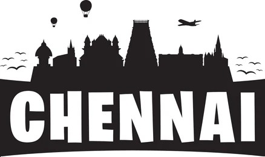
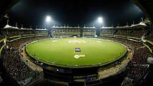
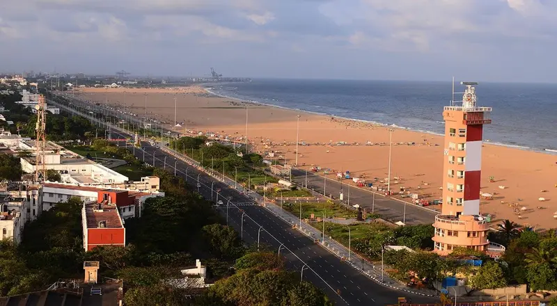
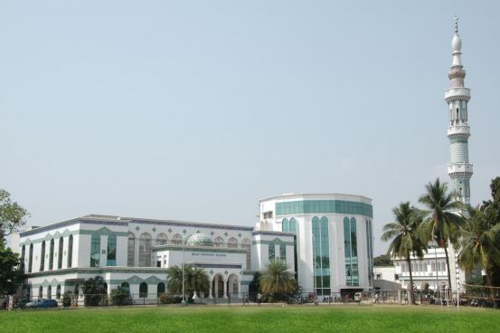
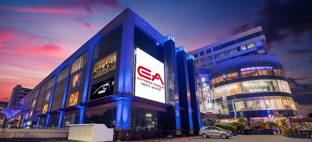

CHEPAUK CONSITUENCY

ABOUT M.A.CHIDAMBARAM STADIUM
M. A. Chidambaram Stadium, popularly known as Chepauk, is one of India's oldest and most iconic cricket grounds. Located in Chennai just a few hundred meters from Marina Beach, it is the home ground for the Tamil Nadu cricket team and the Chennai Super Kings (CSK) in the IPL.
Established in 1916, it is India's second-oldest continuously used cricket stadium after Eden Gardens. It has a seating capacity of around 38,000 spectators and is renowned for its highly knowledgeable and passionate crowd.

ABOUT MARINA BEACH
Marina Beach in Chennai is the longest natural urban beach in India and the second-longest in the world, stretching approximately 13 km along the Bay of Bengal. A major cultural hub, it features historical monuments, statues, and evening food stalls selling local snacks like bajji and roasted corn.
The promenade along Kamarajar Salai is dotted with memorials for former Chief Ministers, such as C.N. Annadurai and M.G. Ramachandran, as well as statues of historical icons like Mahatma Gandhi and poet Thiruvalluvar.

ABOUT SCHOOL
The Hindu Higher Secondary School (HHSS) is one of the oldest educational institutions in South India, established in 1852. Located on Big Street in Triplicane, Chennai, it is an English-medium state-board-aided boys' school managed by the Hindu Educational Organisation.
The school serves around 1,800 students from Class 6 to Class 12, preparing them for the Tamil Nadu State Board Examinations. As an aided school, teacher salaries and operating staff are supported by government grants.

ABOUT COLLEGE
The New College, located in Royapettah, Chennai, is a government-aided autonomous institution affiliated with the University of Madras. Established in 1951, it is accredited with a NAAC 'A++' grade and offers over 56 UG, PG, and PhD programs across Arts, Science, and Commerce streams.
New No. 147, Old No. 87, Peter's Road, Royapettah, Chennai - 600 014.

ABOUT MALL
EA Mall, formally known as Express Avenue (EA), is one of Chennai's premier shopping and entertainment destinations. Located in Royapettah, the 1.75 million-square-foot complex houses over 210 premium brands, an 8-screen multiplex (Escape Cinemas), a massive food court (EA Garden), and South India's largest gaming arcade.
Cinemas offers a world-class movie-watching experience, while the mall's arcade offers extensive recreational activities.

ABOUT HOSPITAL
The Tamil Nadu Government Multi Super Speciality Hospital (TNGMSSH) at the Omandurar Estate on Anna Salai, Chennai, is a 400-bed, state-of-the-art public healthcare facility. It provides free, advanced tertiary medical care across multiple specialties and serves as the teaching hospital for the attached Government Medical College.
One of the busiest units in the state, performing thousands of complex interventional procedures. It features an advanced EECP (Enhanced External Counter Pulsation) unit for non-invasive heart therapy.
HELP
Whether you need assistance with civic issues, non-resident Tamil welfare, or stadium events in Chepauk, here is where you can find direct help